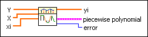

Hermite Interpolation 1D VI
Owning Palette: Interpolation & Extrapolation VIs
Requires: Full Development System
Performs one-dimensional interpolation using the cubic Hermite interpolation method based on the lookup table defined by X and Y.

 Add to the block diagram Add to the block diagram |
 Find on the palette Find on the palette |